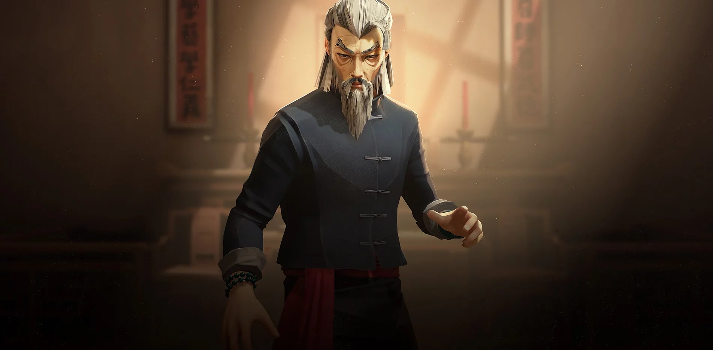
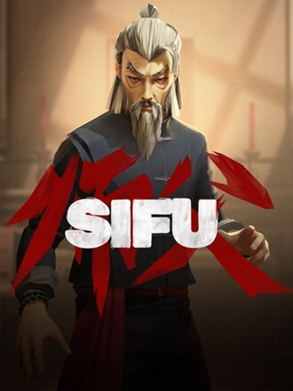

.jpg)
Introdução
Sifu é um jogo eletrônico de ação-aventura e beat 'em up desenvolvido e publicado pelo estúdio francês Sloclap. Foi lançado em 8 de fevereiro de 2022 para Microsoft Windows, PlayStation 4 e PlayStation 5 e depois lançado para Nintendo Switch, Xbox One e Xbox Series X/S. O jogo recebeu avaliações positivas da crítica, e vendeu mais de um milhão de unidades até março de 2022.
Sinopse
Um estudante de kung fu se propõe a cumprir uma vingança desejada ao longo de sua vida: caçar e derrotar os cinco assassinos que mataram brutalmente sua família. O jogo se passa em uma cidade chinesa moderna e é principalmente ambientado na realidade, embora exista magia no mundo, pois o protagonista possui um talismã mágico que o revive sempre que sofre uma lesão fatal em combate, com a desvantagem de que ele envelhece um número de anos com cada ressurreição e acabará morrendo quando a magia do talismã for usada em uma idade avançada.

IGN
Some representative placeholder content for the first slide.

Second slide label
Some representative placeholder content for the second slide.
Third slide label
Some representative placeholder content for the third slide.